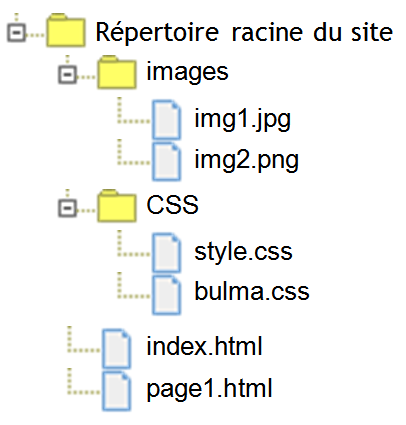
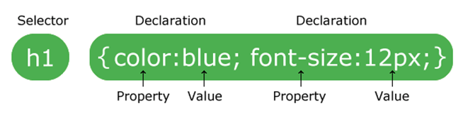

6.1 Les langages HTML5 et CCS3⚓︎
Présentation⚓︎
Les langages HTML et CSS sont des langages syntaxiques de description, par opposition aux langages de programmation que sont Python, Java, C ,...
Ils sont interprétés par les navigateurs des ordinateurs, tablettes ou autres smartphones.

En HTML, les discriptions sont définies par des balises (tag en anglais).
Chaque balise a une signification précise.
On peut associer des attibuts aux balises.
Exemple
<h1> Mon super site </h1>
- Le bloc
h1est défini par la balise ouvrante<h1>et la balise fermante</h1>. - Toutes les balises doivent être fermées, afin de définir la fin du bloc.
- La balise
<h1>(header en anglais) définit un titre de niveau 1. - Le contenu du bloc
h1est donc un titre de niveau 1 et sera afficher comme tel. - Il existe 6 niveaux de titre, depuis
h1jusqu'àh6.
Autre exemple
<img class="image_centree" src="./images/logo_html.jpg" alt="logo HTML" />
- La balise
<img>est une balise auto-fermante : pas de balise</img>mais/>à la fin de la balise pour la fermer. -
La balise
<img>permet d'afficher une image dans le navigateur. -
class,srcetaltsont des attributs de la balise.- L'attribut
classpermet d'associer des propriétés d'affichage au sein de la feuille de style, - L'attribut
src(source) définit le chemin d'accès au fichier image, - L'attribut
altdéfinit le texte à afficher si l'image n'est pas trouvée.
- L'attribut
Intérêt des pages HTML⚓︎
Les pages HTML sont interprétées par des navigateurs.
Ce qui en fait un format universel.
Afin de s'adapter à toutes les tailles d'écran les pages web doivent-être Responsive Web Design.
Les éditeurs de texte⚓︎
Quelques éditeurs gratuits :
- Notepad++,
- SublimText,
- Capytale,
- Geany,
- VSCodium,
- et beaucoup d'autres.
Organisation des fichiers dans le répertoire racine⚓︎

Le nombre de fichiers augmentant rapidement, il est nécessaire de classer les fichiers utilisés par type.
On utilisera au minimum cette arborescence.
HTML : le contenu⚓︎
Structure d'un fichier HTML⚓︎
Tous les fichiers HTML doivent respecter cette structure :
<!-- Ceci est un commentaire -->
<!DOCTYPE html> <!-- définit le type de langage utilisé : ici le HTML5 -->
<html lang="fr"> <!-- ouverture du bloc "html" - Langue : français -->
<head>
<!-- contenu du bloc "head" -->
</head>
<body>
<!-- contenu du bloc "body" -->
</body>
</html> <!-- fermeture du bloc "html" -->
<!DOCTYPE HTML>précise que le ficher contient du HTML5<html lang="fr">ouverture du blochtmlqui englobe tout- Bloc
<head>: entête. Contient la configuration de la page html, des metadonnées et autres informations utiles aux navigateur et moteurs de recherche. - Bloc
<body>: corps de la page. Contient toutes les informations à afficher.
Liste de balises HTML⚓︎
Le bloc head - Les balises d'entête
<head>
<title>Spécialité NSI</title>
<meta charset="UTF-8"/>
<link rel="stylesheet" href="css/style.css"/>
<link rel="icon" type="image/png" href="images/favicon.png"/>
<script src="js/script.js"> </script>
</head>
<meta charset="utf-8"/>définit l’encodage des caractères (affichage correct des lettres accentuées).<title>Spécialité NSI</title>définit le nom de la page dans l’onglet du navigateur.<link rel="stylesheet" href="css/style.css"/>indique l’utilisation d’une feuille de style et son chemin d'accès.<link rel="icon" type="image/png" href="images/favicon.png"/>affiche une icone à gauche de l'onglet.<script src="js/script.js"></script>indique l’utilisation d’un script de type JavaScript et son chemin d'accès.
Le bloc body - les balises de structure
<nav>contient la navigation dans le site.<header>et<footer>définit l’entête et le pied de page.<section>,<article>et<aside>organisent les différentes parties spécifiques à la page.<div>balise générique qui définit un bloc sans lui donner de sens particulier. En général on lui donne un attribut d’identifiantidou de classeclassauquel on associe des propriétés d'affichage dans la feuille de style.
Le bloc body - les balises de texte
Il existe deux catégories de balise:
- les balises de type
blocqui force le passage à la ligne avant et après le bloc. - les balises
inlinequi autorise le positionnement sur la même ligne.
Exemple de balises HTML de texte
<h1>,<h2>,<h3>,<h4>,<h5>et<h6>: balisesblocpour les titres du texte.<p>baliseblocqui définit un paragraphe (espace avant et après le texte).- Les balises
inlinede mise en forme :<em>, (emphasis) pour mettre en valeur (italique),<strong>, pour mettre en valeur (gras),<code>, pour afficher du code informatique,<sup>, pour mettre du texte en exposant,<sub>, pour mettre du texte en indice,<span>, balise générique, comme la balisedivmais de typeinline. Les propriétès associées sont à définir dans la feuille de style.
Rendu de balises de texte
<body>
<h1>Titre de niveau 1</h1>
<h2>Titre de niveau 2</h2>
<h3>Titre de niveau 3</h3>
<h4>Titre de niveau 4</h4>
<h5>Titre de niveau 5</h5>
<h6>Titre de niveau 6</h6>
<p>
Ceci est un paragraphe. Il force le passage à la ligne et
met en place des espacements avec les éléments au dessus et
au dessous (margin et padding).
</p>
<p>
Mise en place des balises in-line :
<em>emphasis</em>, <strong>strong</strong>, <code>code</code>
<sup>sup</sup>, <sub>sub</sub> et
<span style="color:red"> span : balise générique - pas de
propriétés pas défaut) </span>
</p>
</body>
Le bloc body - les listes : 2 types de liste
- les listes non numérotées , introduites par
<ul>, - les listes numérotées , introduites par
<ol>, - Chaque item d'une liste sont introduit par
<li>.
Exemple de listes

<body>
<h1> Faire une pâte à crêpe </h1>
<h2> Liste des ingrédients </h2>
<ul>
<li> 500g de farine </li>
<li> 2 oeufs </li>
<li> 0,5l de lait </li>
<li> une pincée de sel </li>
</ul>
<h2> préparation </h2>
<ol>
<li> Mélanger les ingrédients </li>
<li> Laisser reposer </li>
<li> Faire chauffer la poêle </li>
</ol>
</body>
Le bloc body - Les tableaux avec entête
<table>déclare le tableau,<tr>(table row) définit une ligne du tableau,<th>(table header) définit une cellule d'entête du tableau.<td>(table data) définit une cellule de donnée du tableau.
Exemple de tableau

<body>
<table>
<tr>
<th> Prénom </th>
<th> Nom </th>
<th> Age </th>
</tr>
<tr>
<td> Alain </td>
<td> Térieur </td>
<td> 50 </td>
</tr>
<tr>
<td> Paul </td>
<td> Auchon </td>
<td> 94 </td>
</tr>
<tr>
<td> Jean </td>
<td> Raffole </td>
<td> 80 </td>
</tr>
</table>
</body>
Le bloc body - Les liens hypertextes
La balise <a> définit un lien hypertexte.
-
On peut définir une URL comme lien : description d'un chemin absolu.
<a href="https://nsimichelet91.github.io/1NSI"> Site 1NSI du lycée</a> -
On peut définir un chemin relativement au répertoire courant : description d'un chemin relatif.
<a href="../page1.html"> Aller vers la page1 </a> -
On peut valider le lien en cliquant sur une image.
<a href="https://nsimichelet91.github.io/1NSI"><img src="../img/smiley.jpg" alt="Smiley"> </a> -
On peut faire apparaît un label lors du survol du lien.
<a href="https://nsimichelet91.github.io/1NSI" title="Site 1NSI du lycée"> 1NSI </a>
CSS : l'apparence⚓︎

Le HTML définit le contenu de la page,
Le CSS définit l’apparence (le style).
3 façons de d’appliquer un style à une balise :
- dans la balise elle-même en utilisant l’attribut style,
- dans le bloc
<head>du code html à l’aide d’une balise<style>, - à part, dans un fichier ayant une extension
*.css➤ à privilégier.
CSS : les sélecteurs⚓︎
CSS : les sélecteurs
Les sélecteurs ciblent les éléments HTML auxquels on va attribuer des propriétés.

Syntaxe pour les sélecteurs
| Type de sélecteur | Exemple | Description |
|---|---|---|
balise |
p |
Sélectionne toutes les balises <p> |
.class |
.intro |
Sélectionne toutes les balises contenant l’attribut class="intro" |
#id |
#date |
Sélectionne la balise contenant l’attribut id=“date" |
sélecteur, sélecteur |
div, p |
Sélectionne les 2 sélecteurs (balises <div> et <p>) |
balise balise |
div p |
Sélectionne toutes les balises <p> contenues dans les balises <div> |
balise.class |
p.intro |
Sélectionne les balises <p> contenant l’attribut class="intro” |
Exemple d'utilisation
Fichier index.html
|
Fichier style.css
|

Liste de propriétés CSS⚓︎
CSS : les propriétés CSS dédiées au texte
| Nom de la propriété | Valeurs possibles | Remarque |
|---|---|---|
color |
Code couleur | Définit la couleur du texte |
background-color |
Code couleur | Définit la couleur de fond de l'élément HTML |
font-family |
Nom de la police de caractère | Définit la police à utiliser |
font-size |
Valeur numérique | Définit la taille de la police |
font-style |
normal, italic ou oblique |
|
font-weight |
normal ou bold |
bold affiche les caractères en gras |
text-decoration |
None, line-through ou underline |
|
line-height |
Valeur numérique | Définit la hauteur minimale de la ligne |
text-indent |
Valeur numérique | Définit l'indentation (c'est à dire le retrait de la 1ère ligne) |
CSS : les propriétés CSS dédiées au blocs

Extrait de propriétés dédiés au bloc
| Propriété | Valeurs possibles | Remarque |
|---|---|---|
margin |
Valeur numérique | Définit l'épaisseur de la marge extérieure |
padding |
Valeur numérique de caractère | Définit l'espace entre le contenu et la bordure (marge intérieure) |
border-width |
Valeur numérique (0 par défaut) | Définit l'épaisseur de la bordure |
border-style |
solid, dashed, dotted, groove ou ridge, par défaut None |
Définit le style de la bordure |
border-color |
Code d'une couleur | Définit la couleur de la bordure |
border-radius |
Valeur numérique | Définit le rayon de l'arrondi des coins du cadre |
border |
width style color |
Définit la largeur, le style et la couleur en une seule fois |
Exemple d'utilisation
Fichier index.html |
Fichier style.css |
Les liens utiles⚓︎
Khan-academy : un tuto pour les personnes qui débutent
Ostralo.net : Une bonne synthèse
OpenClassRoom : un tuto très complet
W3school : pour retrouver une information ou tester un exemple.